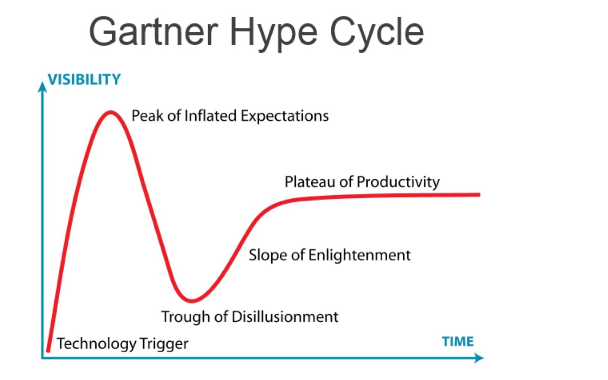
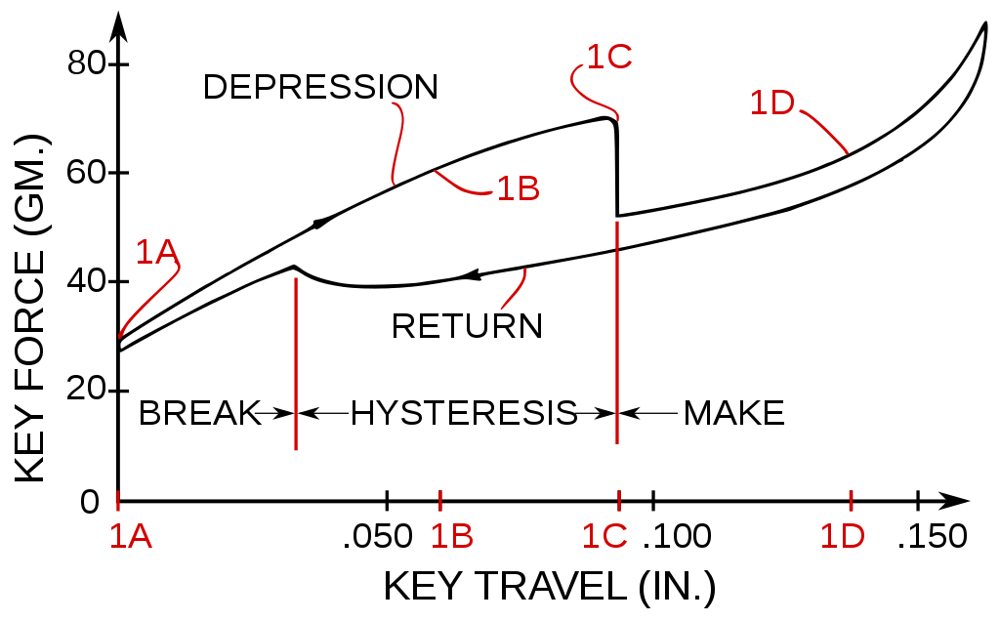
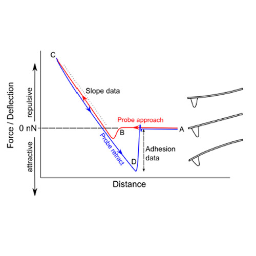
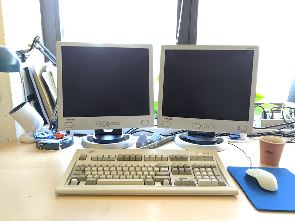

harrisonn griffin
mcgill university, dept of physics
grütter research group
montréal, qc, canada
griffin dot harrisonn at gmail.com
Learning a language from subtitles | October 2019
BACKGROUND
I have been wanting to learn Norwegian so that I can talk with my friends, family, and eventually be able to move to Norway! However, I was not finding books or online courses to successful.
I started wondering, many unique words do I actually need to know in order to be conversationally fluent in the language? In order to find out, I would need to:
- Find a large data set of conversational Norwegian.
- Analyze word frequency.
- Determine what level would make me "conversationally fluent".
One of the most accessible means of casual conversational language, I thought, could come from television. Since many Norwegians like American series, I decided to look into one of the most famous casual sitcoms ever made; Friends. I never watched the show, but I have Norwegian friends that do! With 236 episodes, I think we could make a big enough data set to look at common casual words.
THE DATA
First step was gathering my data set. Since this show was widely available with
subtitles, it
was easy enough to find a download with all the files have my Norwegian friends
translate
and timestamp all 5192 minutes (3.6 days).
First thing to do is look at the actual structure of the text files. We see that they are formatted as follows:
Number of subtitle.
Time stamp of subtitle .
Text.
11
00:00:57,160 --> 00:01:03,554
-Jeg må prate med deg.
-Jeg må faktisk prate med deg også.
We can just use Bash to parse and format our data. With the unix pipeline, we could do this a a huge one liner, but for the sake of readability we will break it down line by line!
1 cat ~/friendsAllSeasons/* |
2 grep -v '^[0-9]' |
3 sed 's/[?!.|]/ /g' |
4 sed 's/ * / /g' |
5 sed "s/[^A-Za-z\' ]//g" |
6 sed 's/^ //g' |
7 sed 's/ /\n/g' |
8 sed '/^$/d' |
9 sed -e 's/\(.*\)/\L\1/' |
10 sort |
11 uniq -c |
12 sort -rn |
13 sed -e 's/^[ \t]*//' > all_data.csv
- Read all files in our subtitle directory.
- Delete lines that start with a number.
- Replace "?", "!", and "." with a single space.
- Replace multiple spaces with a single space.
- Delete everything but letters, apostrophes, and spaces.
- Delete spaces from begining of lines.
- Turn spaces into line breaks to separate words by lines.
- Delete empyt lines.
- Make all upper case letters to lower case.
- Sort alphabetically.
- Make a list with unique words and their occurence.
- Sort by occurences.
- remove spaces and write the list to a file all_data.csv.
Now we have a list of all of our uniqe words and how many times they occurred in the series. With this information, we can analyze our data!
VISUALIZING
In order to understand how many words we need to learn to have a certain grasp of the language, we can plot the percentage of total words as a function of the most common words. That is, for the top 1000 most common words we can plot what percentage of total words (non unique) they are.
In doing so we see this nice logarithmic plot. What we see is that if you were to learn the top 1000 most common words, you would understand just over 85% of the total words spoken in the entire series! Even by learning the top 50 most common words, you would approximately undersatnd 50% of every word spoken.
OUTLOOK
So we see that with our quick and dirty approach, we would just have to learn the most common 1000 words to have an 85% grasp of language, according to Friends. This seems great, but there are some things we did not consider:
- We do not remove names.
- We do not make verb conjugations non unique, that is every tense is a unique word.
- We assume just memorizing these words will give us an understanding of the language.
There are many areas in which I could refine this approach, but for the sake of the exercise it isn't worth it. Surely the idea that I could become fluent in a languge just by memorizing individual has its flaws, but it would certainly be a great way to make a vocab list to accompany my formal studies!
Citations of Nobel Prize Papers | October 2019
Since it is the week of the Nobel Prize announcements, I thought it might be nice to
reflect on
some of the more famous Physics Review Letters articles whose work eventually led to a
Nobel Prize.
Althought the impact factor of PRL may not seem that impressive at first glance,
it is an incredibly well respected journal for experimental condensed matter physicists.
Over the years, some of the most important contributions to experimental condensed
matter physics manuscripts, those that have gone on to win the nobel prize, have been
published in PRL. Some of these papers include:
- Graphene; Novoselov et al
- Scanning Tunneling Microscopy; Binning et al
- The Transistor; Bardeen and Brattain
- Helium 3; Osheroff et al
- Fractional quantum Hall effect; Tsui et al
- Quantum Hall effect; Klisting
In their respective fields, all of these papers have been impactful, so much so that all
of them have won the Nobel prize in physics.
But how impactful is impactful? Well, since impact is often judged by citation count, we
can look at every citation for these papers since they have been published (as of spring
2019). We can look at citations count from Google Scholar, Web of Science, and the
American Physical society.
We see a couple of interesting things. First of all, their is a large discrepancy
between Google Scholar compared to WOS and APS. This came as a bit surprising, since APS
is the organization responsible for PRL.
Secondly, for being the newest paper, the Graphene manuscript has by far the most
citations, with almost eight times more counts than the second most cited.
This begs the question, does more citations really mean higher impact? Well, we have to
consider that today there are many more journals and publications than ever before, so
citing and self citing new papers seems more likely to happen. Since graphene has so
many potential applications in electronics, it makes sense that their is a lot of
publications on it.
So maybe graphene has the highest impact of all condensed matter physics papers? Or
perhaps we are just at the "peak of Inflated Expectations" in its Gartner Hype Cycle.

Graphene is surely at its peak hype these days. This warrants the immense number of graphene related publications. It is impossible to say if graphene will live up to its hype, but maybe in a few years we will have graphene consumer electronics as we enter the "Plateau of Productivity", while a new material is reaching its peak hype.
Restoring a 1978 VW Camper Bus | October 2019
I just took my 1978 Volkswagen Camper Bus to a car show today during the Canadian Thanksgiving long weekend, so I thought it would be a great time to reflect quickly on my 7 year restoration project!
- Why I bought it
- Brief overview of what I did.
- Some things I learned along the way.
Is the IBM model m the best keyboard? | September 2019
I have recently taken an interest in vintage keyboards. It started out with finding
a late 80s HP micro keyboard in my lab. It was in the throwout pile, covered in dirt
and dust. But when I picked it up and flet the klick clack of its keys, I
knew I had to rescue it!
It was a cool keyboard, I liked the look and feel of it. The only thing was that the
connection was a DIN-5, not a PS2. I had never even seen a DIN-5 connection before,
but after a quick google search I saw that I could passively convert the DIN-5 to
PS2.
After a quick dig through the garbage box to find a broken mouse with a PS2 end, I
did some quick solder work and had my first working mechanical keyboard.
It was awesome. Having only ever typed on modern digital keyboards, I know
understood what all the hype was about. I started rescuing any old keyboard I saw in
the recycling, garbage, etc.
One day while I was at University of Montreal taking a coffee break during some
experiments, I saw an old pile of lab equipment waiting for the poubelle.
After some poking around, I found what many consider the holy grail of mechanical
keyboards - an IBM Model M.
It was heavy, dirty, and had some shortcut stickers for lab equipment stuck onto
some keys, but I stuck the keyboard in my bag and brought it home for a good wash.
I had heard about how loud these keyboards were with their buckle spring
mechanism, but I never imagined how great the typing experience on this keyboard
would be. At the start of your key press, you feel the perfect amount of force as
you begin to depress the key. It gets a little harder to push the more you compress,
but eventually, you hit the point where spring buckles and with a lout CLACK
the key depresses.
As an AFM guy, I love force curves (who wouldn't). And much to my surprise, the
wikipedia page for the buckling spring had a force curve on it. You can see the
force increase leading to the key press, and the hysteresis of the key on the
release.

This looks strikingly similar to an AFM force curve of a microcantilever approaching
a surface (just flipped vertical axis).

I deal with forces (on the order of piconewtons) daily, so I understand and
appreciate the importance of force feedback. One thing for sure is that the buckle
spring lives up to the hype, and truly is a joy to type on. See below a picture of
my vintage setup!
